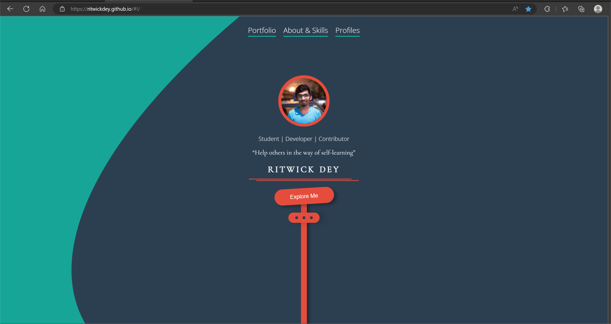

 Link: Ritwick Dey's github
The first thing I noticed is the jittery button of "Explore Me". Because it keeps shakng and make a strong contrast with its red colour and green background. Its shadow also highlights itself.
Click the category button to filter all the projects Ritwick Dey created.
Reading content and clicking buttons.
My impression of the intended primary goal of the interactive experience is that interface and elements should be designed with apparent directivity, in order to let vistors know on which area of this website by what operating they can get the information they want.
Interactive expereince communicates its primary goal with several design elements including shape, color, material of website components. For example, initial interface of Ritwick Dey's Portfolio presents a teal and blue folder-like page, and he design "Explore Me" button as a red seal of this folder to let visitors know that they can click this button to get more information of him.
5 times per minute.
Interface should show both forward and backward transformation as user/visitor operating. For instance, when user click “Portfolio” button, background image shift to left to imply that visitor has been jumped into next interface.
Professional avatar, listing his skills on a underline menu.
The underline menu encourages me to read the content in category.
The information is organized well and easy to read.
Category button and its refresh mechanism. I had to click all the other language buttons until the only one I wanted left, which is all about repeating and exhaust my patience.
To me, the most satisfying element of the interaction is returning button on the left top branch page. Because it has a delicate shape and indicates its function clearly.